Overview
SweeperCalc is a Gen VI 6v6 damage calculator. It is primarily used during online competitive battles as a resource for determining how much damage you can do to your opponents and vice versa. SweeperCalc is useful because it provides a visual overview of all damage calculations by all Pokemon in the battle (and is much more efficient than looking at the calculations manually in a 1v1 calculator). SweeperCalc enables you to import your team as well as select Common Sets which can be used to predict what moves your opponent may have (statistically speaking, your opponent will run the most common set). SweeperCalc is also a great tool for team building in the case of looking at Pokemon sets that bReakMyTeam does not include.
Quick Start
1. Import your team to the left side of the table. You can import using Pokemon Showdown format by clicking the ‘< import’ (Meowstic-M) button or manually filling out the form. SweeperCalc saves your data, so everytime you reload the page, your team will stay.
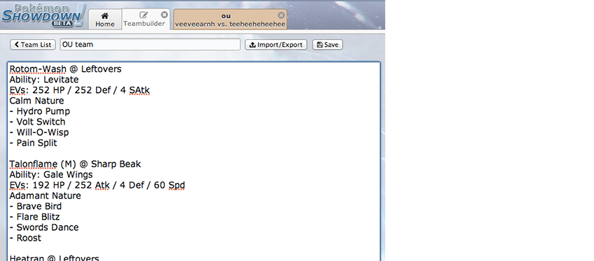
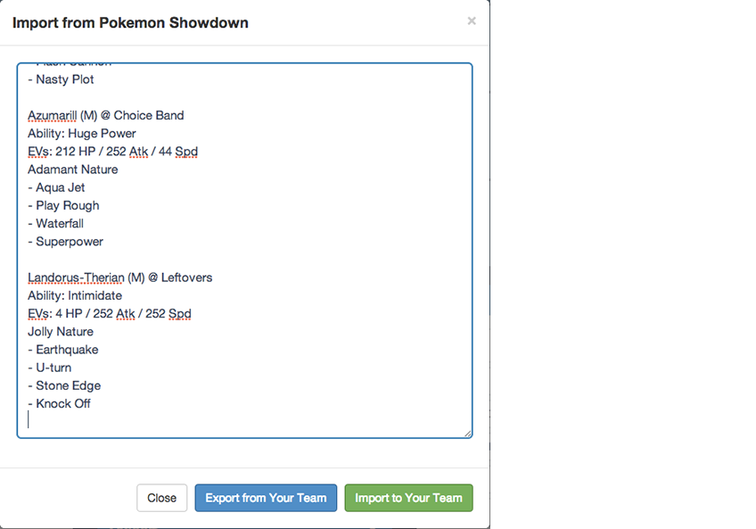
2. At the start of a Pokemon Showdown battle, you get a one-liner listing the opponent’s Pokemon. Copy this line into the importer for the right side of SweeperCalc by clicking the 'Import>' (Meowstic-F) button. If you are not playing in OU, you can specify the tier like so: ‘Ubers: Espeon / Volcarona / Talonflame / Skarmory / Blissey / Rotom-W’. Currently supported tiers are Ubers, OU, UU, LC and VGC. (If you are on a 3DS battle, simply look at the Pokemon sprites before the battle and type their names in the same format as above).
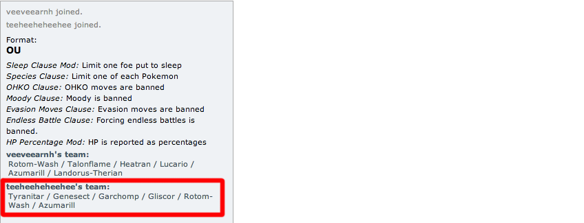
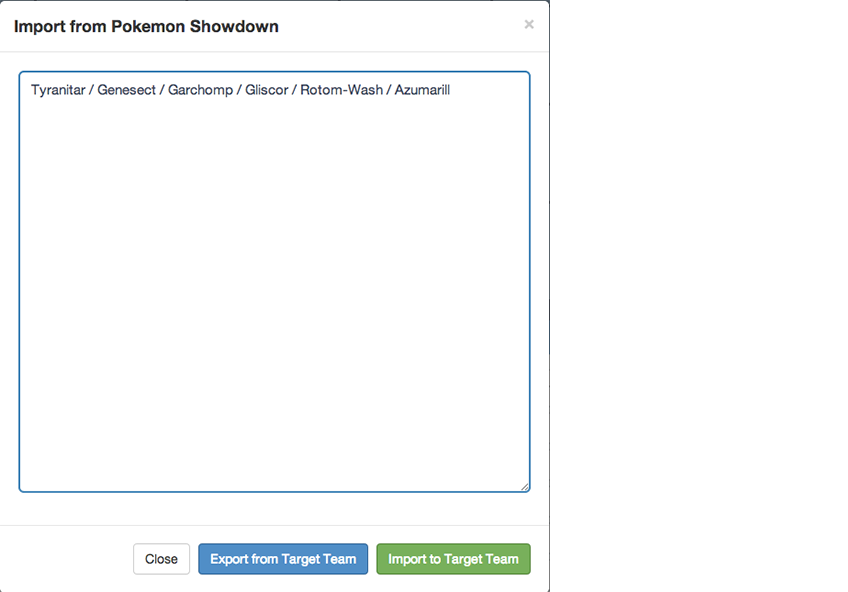
3. SweeperCalc will then automatically generate the most common set as a good guess for the opponent’s moves, sets and abilities. Of course it won’t be correct all the time but it gives you a rough idea of the moves that your opponent will most likely have. The damage results are displayed in the table (see below).
4. As the battle goes on, adjust the opposing team using the forms. All most common sets have 6 moves, so perhaps when you are sure of the opponent’s moves, remove some of the ones they don’t have. You can also adjust the environment, levels and format (doubles/singles) in the Options panel. Don’t forget to “mega evolve” your/your opponent’s Pokemon as they happen. You can do this by changing the Pokemon name from ‘Venusaur’ to ‘Venusaur-Mega’.
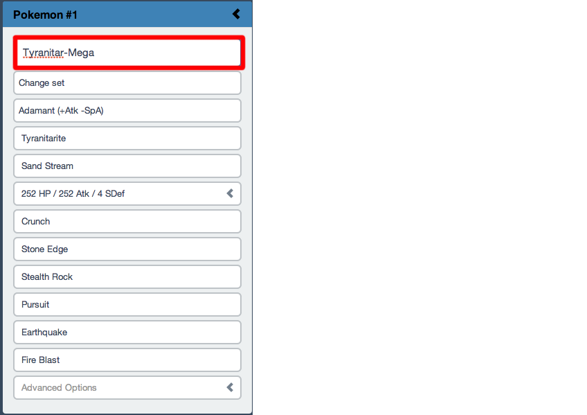
5. Once you have finished the battle, click the ‘Reset>’ (Abra) button, enter another battle and repeat!
The Table
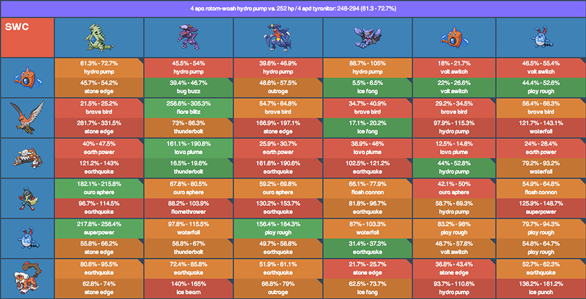
The table displays a lot of data so it can be pretty daunting to view at first. We'll cover some features that might not be apparant.
The Cell
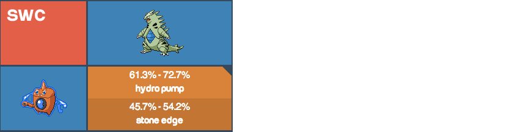
The move picked by SweeperCalc for each attacker is the one that does the most damage to its target.
In this example, Rotom's Hydro Pump hits Tyranitar hardest out of all its moves and hence is the move shown. The bottom half of the cell shows the move that Tyranitar hits Rotom with the hardest - in this case, it is Stone Edge.
Outspeed Triangles
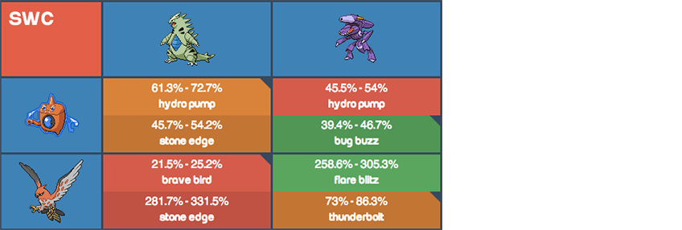
The triangles in the top right of a cell indicate that the attacking threat is faster than the defending threat.
In this example, Rotom outspeeds Tyranitar and Genesect outspeeds Rotom. Note that these triangles do not take priority into account in SweeperCalc.
Popovers
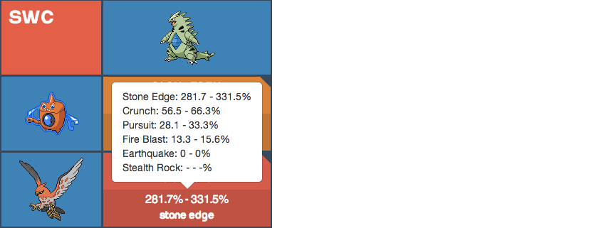
Click on a cell and you'll see the damage calculations for the entire moveset of the offensive Pokemon.
Text Output
Click on a cell and you'll see the standard text output for that calculation.
Display Modes

Verbose Mode is the default output mode. It shows min damage, max damage and the move name.
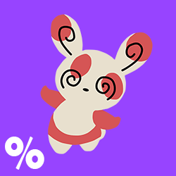
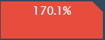
% Mode shows the max damage of the highest damaging move.
Visual mode only displays the cell colour and the speed triangle.
Dual Mode
By default, SweeperCalc shows both what damage you do to your opponent and vice versa. You can enable just your own attacks by turning Dual Mode off.
Options

Setting the doubles mode reduces the power of spread moves by 25% and reduces the effectiveness of Light Screen and Reflect.
Selecting VGC mode automatically activates Doubles mode.
The Level selector changes all Pokemon to the indicated level.
Damage proportions are different at different levels.

Light Screen reduces damage from special attacks by 50%.
Reflect reduces damage from physical attacks by 50%.
The left side corresponds with the threats and the right side corresponds with the target team.
Trickroom reverses speed calculations.

Weather changes the typing of Weather Ball
Solar Beam does half damage in Rain, Sand and Hail.
Sun increases the damage of Fire type moves by 50%, reduces Water type moves by 50% and activates Chlorophyll for speed calculations.
Rain increases the damage of Water type moves by 50%, reduces Fire type moves by 50% and activates Swift Swim for speed calculations.
Sand increases the Special Defense of Rock type Pokemon by 50% and activates Sand Force and Sand Rush.
Hail has no additional effects